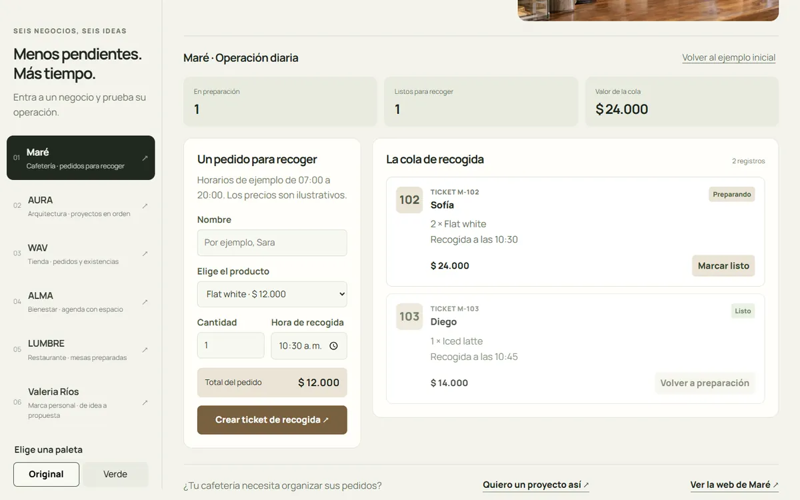
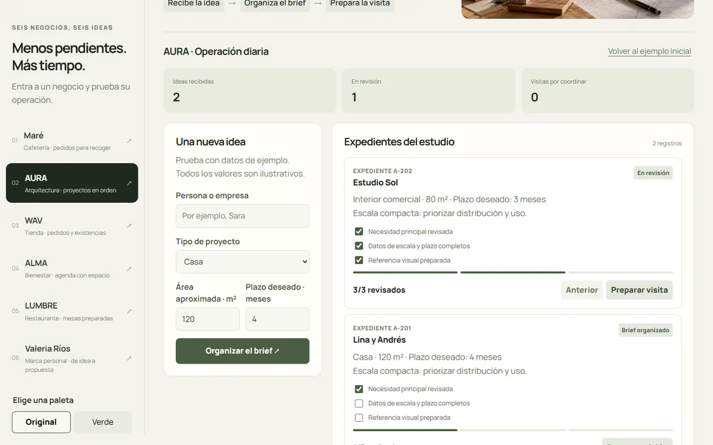
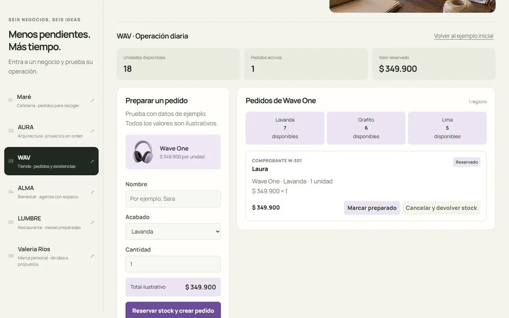
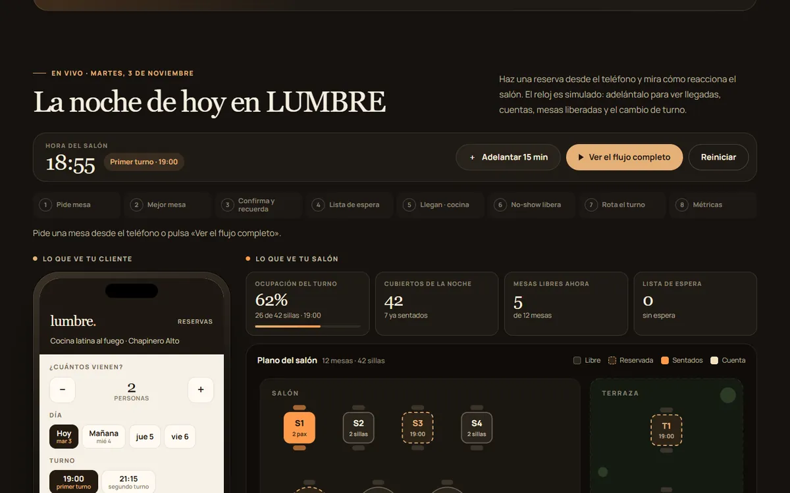

Seis negocios, seis automatizaciones.
Cada negocio trabaja distinto, así que cada automatización es distinta. Elige una y pruébala como si fuera tuya.

Cafetería · MaréPedidos que llegan listos a la barraPedido para recoger, ticket, cola de la barra y aviso de "tu pedido está listo".

Arquitectura · AURADe la consulta al proyecto en ordenSolicitud guiada, brief automático, embudo de proyectos y visita a obra agendada.

Tienda online · WAVCada venta mueve todo soloPago, inventario por color, factura, guía de envío y avisos al cliente.
 Clínica · ALMAAgenda sin huecos ni olvidos
Clínica · ALMAAgenda sin huecos ni olvidosCitas por especialista, recordatorio 24 h antes y lista de espera automática.

Restaurante · LUMBRELa mesa correcta para cada reservaPlano del salón, asignación de mesa, lista de espera y liberación por inasistencia.
 Marca personal · Valeria RíosDel interés a la propuesta firmada
Marca personal · Valeria RíosDel interés a la propuesta firmadaBrief, calificación, llamada, propuesta con precio, firma y tablero del proyecto.
Marcas ficticias y datos de ejemplo: no se envían mensajes, no se cobran pedidos ni se hacen reservas reales.